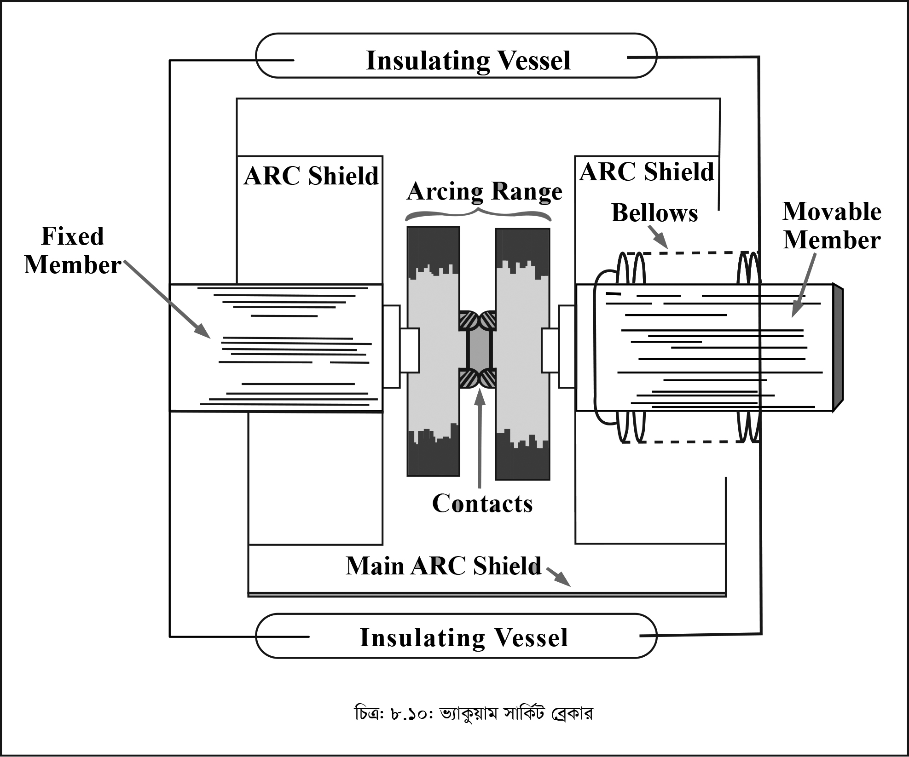

<div class="content">
    <div class="scroller">
        <p class="page-no">147</p><br><br>
        <h2></h2>
        <div>
            <p>
                ৫।    SF<sub>6</sub> গ্যাসে আগুন লাগার ভয় নেই। কারণ, এ গ্যাস অদাহ্য।
                <br>৬।    কোনো কার্বন জমা হয় না।
                <br>৭।    মেরামত খরচ কম, হালকা ফাউন্ডেশন প্রয়োজন এবং কম অক্সিলারি যন্ত্রপাতি লাগে।
                <br>৮।    এ ধরণের ব্রেকার পরিপূর্ণভাবে বাইরের বাতাস থেকে Sealed করা হয়, যাতে কোনোরূপ দুর্ঘটনা না ঘটে।

            </p>
        </div>
        <div>
            <p>
                <b>অসুবিধাসমূহ (Disadvantages):</b>
                <br>১।    SF<sub>6</sub> গ্যাসের দাম বেশি হওয়ায় এ ব্রেকার ব্যয়বহুল।
                <br>২।    রিজারভারে পর্যাপ্ত গ্যাস জমা রাখতে হয়।
                <br>৩।    প্রত্যেক অপারেশনের পর SF<sub>6</sub> গ্যাস পূর্বের অবস্থানে নেওয়ার প্রয়োজন বিধায় অতিরিক্ত যন্ত্রপাতি লাগে।
            </p>
            <p>
                <b>ব্যবহার (Uses):</b> একক ইউনিট ব্যবহার করে ভোল্টেজ রেঞ্জ 50-80 kV পর্যন্ত এবং কারেন্ট রেঞ্জ 60kA পর্যন্ত ব্যবহৃত হয়।  আবার একের অধিক ইউনিট ব্যবহার করে 115kV থেকে 20MV গঠ পর্যন্ত ব্যবহার করা যায় এবং পাওয়ার রেটিং 10MVA থেকে 20MVA পর্যন্ত হয়। তিন সাইকেলের মধ্যেই এর ইন্টারাপটিং ক্রিয়া সম্পন্ন করা যায়।
            </p>
        </div>
        <div>
            <p><b>(চ) ভ্যাকুয়াম সার্কিট ব্রেকার</b></p>
            <p><b>(Vacuum Circuit Breaker)</b></p>
            <p><b>গঠন ও কার্যপ্রণালি :</b> চিত্রে ভ্যাকুয়াম সার্কিট ব্রেকার দেখানো হলো। একটি ভ্যাকুয়াম চেম্বারে স্থির কণ্টাক্ট, চলমান কণ্টাক্ট এবং আর্ক শিল্ড স্থাপন করা হয়। চলমান কণ্টাক্টটি স্টেইনলেস (Stainless) স্টিল যাঁতার (bellows) মাধ্যমে কণ্টাক্ট মেকানিজম-এর সাথে সংযুক্ত থাকে। এর ফলে ভ্যাকুয়াম চেম্বারে লিকেজ হতে পারে না। বাইরের ইনসুলেটিং বডি হিসেবে গ্লাস ভেসেল বা সিরামিক ভেসেল ব্যবহৃত হয়। আর্ক শিল্ডের সাহায্যে অভ্যন্তরীণ ডাই ইলেকট্রিক শক্তির পতনে বাধা দেওয়া হয়। </p>
        </div>

        <p class="c-align">
            
        </p>
        <p class="c-align">চিত্র- ৮.১০ : ভ্যাকুয়াম সার্কিট ব্রেকার
            <span class="tooltip_my">
                <i class="fa fa-play-circle video-class" videosrc="videos/147/147-animn-122.mp4" style="font-size: 20px;" aria-hidden="true"></i>
                <span class="tooltiptext">click here to see the video</span>
            </span>
        </p>

        <p>
            ভ্যাকুয়াম এর ডাই-ইলেকট্রিক শক্তি খুব বেশি। এ নীতির ভিত্তিতেই ভ্যাকুয়াম সার্কিট ব্রেকার পরিচালিত হয়। যখন ব্রেকার অপারেট করে, তখন স্থির কণ্টাক্ট হতে চলমান কণ্টাক্ট বিচ্ছিন্ন হয় এবং কণ্টাক্ট দুটির মধ্যে আর্কের সৃষ্টি হয়। ধাতব কণ্টাক্ট এবং ধাতব আয়নের (Ions) আয়োনাইজেশনের ফলে এ আর্ক উৎপন্ন হয়। খুবই অল্প সময়ে এ আর্ক মুক্ত হয়ে স্থির কণ্টাক্ট সারফেল এবং শিল্ডে চলে যায়। ভ্যাকুয়াম এর ডাই-ইলেকট্রিক শক্তি খুব বেশি বিধায় দ্রুত আর্ক নির্বাপিত হয়। এ ব্রেকার অপারেশনের সময় স্থির কণ্টাক্ট হতে চলমান কণ্টাক্ট অল্প (0.625 সেমি) দূরে সরে যায়।
        </p>

    </div>
</div>
